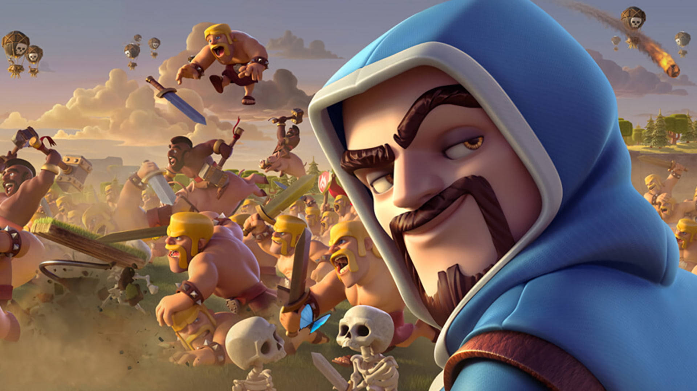
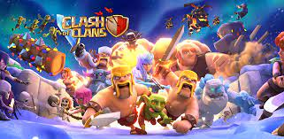

Welcome to Our Gaming Hub
Clash of Clans is a captivating mobile strategy game that allows players to build, battle, and conquer in a virtual world of villages and clans.
With its addictive gameplay and vibrant graphics, it has become a global gaming sensation, attracting millions of players of all ages.
What is Clash of Clans?
Clash of Clans is a mobile strategy game developed by Supercell, where players build and upgrade their villages, train troops, and form clans. The game involves strategic planning to defend against enemy attacks and to launch offensives on other players' villages. Players can collect resources, join clan wars, and participate in various events. With its vibrant graphics, social interaction, and addictive gameplay, Clash of Clans has become one of the most successful and enduring mobile games, captivating millions of players globally.
How to Clash of Clans?
To play Clash of Clans, download the app and start by building your village, training troops, and upgrading structures for better defenses and resources. Join or create a clan to collaborate with others. Participate in Clan Wars, attack other villages to gain trophies, and defend yours from enemy raids. Collect resources and use them wisely to progress and unlock new levels and upgrades. With time and strategy, you can become a formidable force in the Clash of Clans world.
About Clash of Clans
Clash of Clans holds the record for being the highest-grossing mobile game of its time, earning over $7 billion in revenue since its release in 2012. The game was inspired by the creator's love for strategy board games and his desire to develop a compelling mobile gaming experience. Clash of Clans was also featured in a commercial during Super Bowl XLIX in 2015, emphasizing its widespread popularity. The introduction of Clan Wars in 2014 brought a new level of competitiveness and collaboration, leading to even greater engagement among players. The game's continuous updates and events have kept its massive player community engaged and eager for more challenges over the years.


